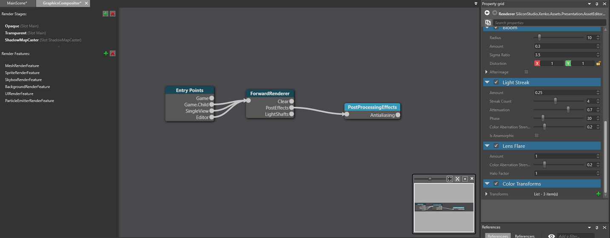
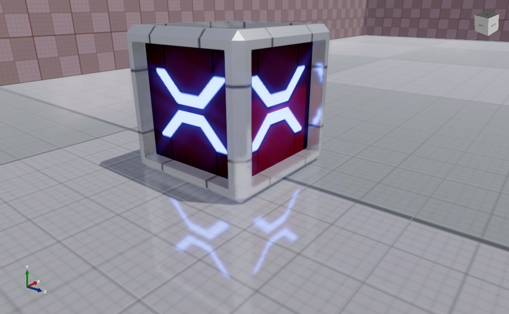
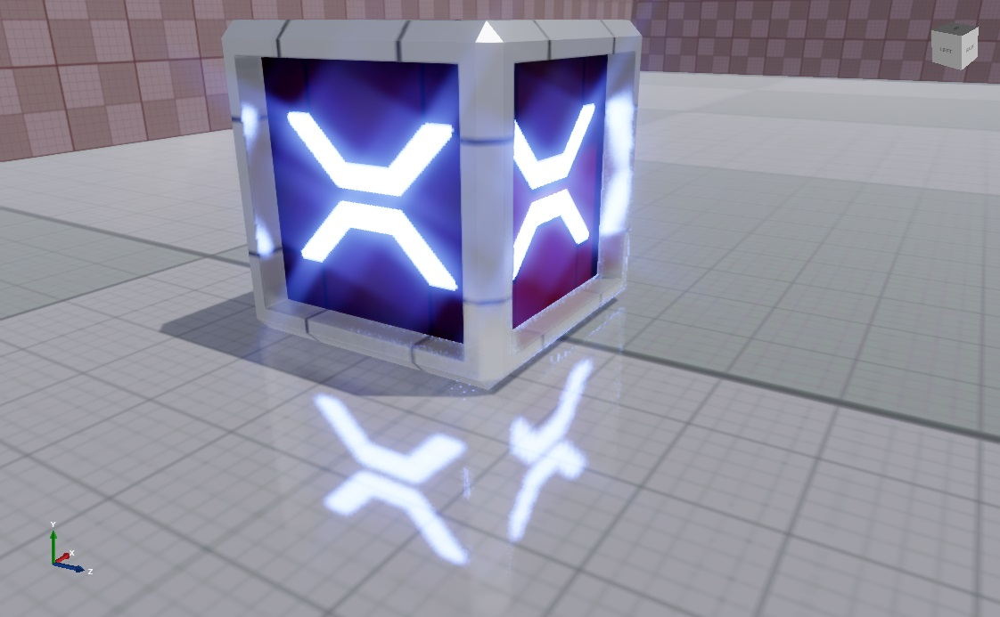
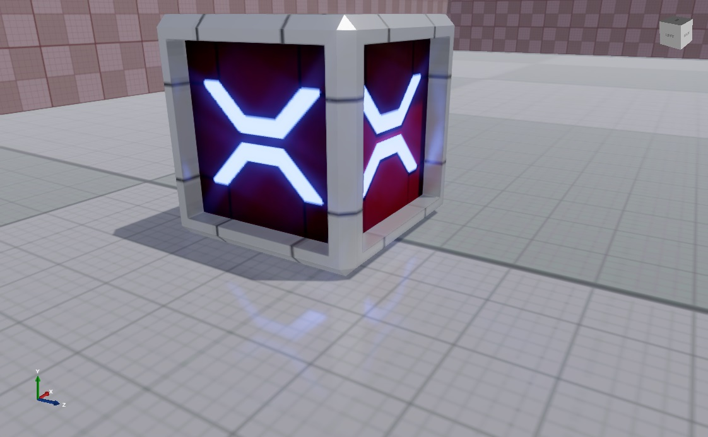
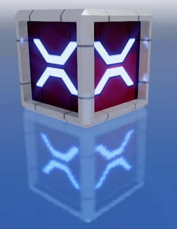

ローカル反射
中級 アーティスト プログラマー
Warning
今のところ、ローカル反映はモバイルプラットフォームとの互換性がなく、クラッシュの原因となっています。
Note
深度を考慮する他のポストエフェクトと同様に、ローカル反射を有効にすると、MSAA（マルチサンプル アンチエイリアシング）が無効になります。
ローカル反射（Local reflections） を有効にすると、光沢のあるマテリアルにシーンが反映されます。

ローカル反射は、シーンのリアリティを劇的に向上させます。ローカル反射は、明るい部分が他の面に反射するときに最も顕著に現れます。このエフェクトは、コントラストの高い暗いシーンや、反射する面やハイライトが多い状況で特に有効です。
ローカル反射を使う場所
ローカル反射は、空間的なエフェクトであり、画面上に存在するオブジェクトのみを反映し、画面外にあるオブジェクトや他のオブジェクトに隠れているオブジェクトは反映されません。簡単に言えば、カメラがその瞬間にオブジェクトを見ることができなければ、そのオブジェクトは反映されません。
つまり、ローカル反射は、廊下や部屋のような閉鎖された場所ではうまく機能しますが、多くのものが映り込んでいるような開放的な場所ではうまく機能しません。また、凹凸のある面では最も効果的に機能し、反射の欠陥を隠すことができますが、非常に光沢のある鏡のような面では効果が低くなります。例えば、鏡のようなものでは、映り込みが目立ちます。
アルゴリズム
Stride は、ローカル反射を 4 つのパスで処理します。
raycast パスでは、深度バッファ上でスクリーン空間のレイトレーシングを行い、交差点を見つけます。
resolve パスでは、レイ（視線）を分解し、反射色を計算します。
temporal パスでは、ヒストリーバッファを使用して、現在のフレームと直前のフレームの間を常にぼかします。これにより、反射のノイズを減らすことができますが、動く「ジッタリング」効果が発生して時々目立ちます。このステップを調整したり無効にしたりすることで、お望みの効果を生み出すことができます。
combine パスでは、エフェクトの結果とレンダリング画像とをミックスします。
ローカル反射を有効にする
ローカル反射を使用するには、グラフィックスコンポジター でエフェクトを有効にします。
アセットビューで、グラフィックスコンポジターアセットをダブルクリックします。

グラフィックスコンポジターエディターが開きます。

Post-processing effects ノードを選択します。
Tip
Post-processing effects ノードが存在していない場合は、右クリックして [Create] > [post-processing effects] を選択し、作成してください。そして、新しいフォワードレンダラーノードの PostEffects スロットをクリックし、Post-processing effects ノードまでドラッグしてください。

プロパティグリッドで、Local Reflections を有効にします。

ローカル反射を有効にすると、シーンが光沢のあるマテリアルに反映されます。 光沢しきい値（gloss threshold）（下記参照）を使って、シーンを反映させるためにマテリアルをどの程度光沢させるかを設定できます。
プロパティ
ローカル反射プロパティの変更は、シーン内のすべてのローカル反射に影響を与えます。
Raycast プロパティ
BRDF bias
映り込みの広がり度合いです。値が高いほど、より細かく、より鏡のような反射が得られます。
この設定はパフォーマンスには影響しません。既定値は 0.82 です。
BRDF: 0.6 |
BRDF: 0.8 |
BRDF: 1.0 |
|---|---|---|
 |
 |
Depth resolution
レイキャストのパフォーマンスを最適化するために、深度バッファをダウンスケールします。 Full はより良い品質を提供しますが、Half はパフォーマンスを向上させます。既定は Half です。
Gloss threshold
シーンを映し込むためにマテリアルが持たなければならない光沢（gloss）の最小量です。
例えば、この値が 0.4 に設定されていると、 gloss map の値が 0.4 以上のマテリアルだけがシーンを反映するようになります。既定値は 0.55 です。
Note
マテリアルの Geometry > Micro Surface プロパティで Invert チェックボックスが選択されている場合は、その逆になります。
例えば、反射の光沢値が 0.4 に設定されている場合、 Gloss map の値が 0.4 未満のマテリアルのみがシーンを反映します。
光沢の詳細については、マテリアル：ジオメトリ属性を参照してください。
Max steps
1 ピクセルあたりに許されるレイキャストステップの最大数です。
値が大きいほど良い結果が得られますが、パフォーマンスは悪くなります。
既定値は 60 です。
Note
これは、パフォーマンスをコントロールする上で最も重要なプロパティです。
Resolution
レイキャストの解像度です。full と half の 2 つのオプションがあります。 full は品質が向上しますが、half はパフォーマンスが向上します。既定値は half です。
Ray start bias
レイキャストの原点のオフセットです。
値を小さくすると、より正しい反射配置が得られますが、より多くのアーティファクトが発生します。
0.03 以下の値を推奨します。既定値は 0.01 です。
開始 bias: 0.01 |
開始 bias: 0.1 |
|---|---|
|  |  |
| 反射とボックスとの隙間が大きい（より正しい） | 反射とボックスとの隙間が小さい（正しくない） |
Resolve プロパティ

Resolution
レイキャストの結果を使って反射色を計算します。 full と half という 2 つのオプションがあります。 full では最も良い結果が得られますが、half ではパフォーマンスが向上します。 既定値は full です。
Samples
反射色の解決に使用される光線（ray）の数です。
値を大きくするとノイズは少なくなりますが、パフォーマンスは悪くなります。
既定値は 4 です。
Reduce highlights
反射の中でも特に明るい部分の輝度を下げます。 性能には影響しません。
| Reduce highlights オン | Reduce highlights オフ |
|---|---|
 |
 |
Edge fade factor
映り込みのエッジが薄くなり始めるポイントです。
これはパフォーマンスには影響しません。
既定値は 0.1 です。
Edge fade factor: 0 |
Edge fade factor: 0.5 |
|---|---|
 |
 |
Use color buffer mips
入力色バッファをダウンスケールし、反射色を解決する際にぼかしたミップマップを使用します。 これにより、ざらざらした（光沢の少ない）マテリアルでの反射の遠方をぼかすことができ、よりリアルな結果が得られます。 また、ほとんどのプラットフォームでパフォーマンスが向上します。 ただし、より多くのメモリを使用するため、たとえばモバイルプラットフォームでは無効にしたほうがよいでしょう。
Temporal プロパティ

Temporal effect
temporal パスを有効にします。 これにより、ノイズは減少しますが、動く「ジッタリング」効果が発生し、時々目立ちます。 既定では、temporal エフェクトは有効になっています。
| Temporal effect オン | Temporal effect オフ |
|---|---|
|  |
Note
temporal エフェクトを無効にした場合、他の temporal プロパティは無視されます。
Response
現在のフレームの反射とヒストリーバッファの間で反射がどのくらい早く合成されるかの度合いです。 低い値では反射が速くなりますが、ジッタリングが多くなります。 下の画像ではジッタリングが発生しています。

ゲーム内のカメラがあまり動かない場合は、1 に近い値を推奨します。既定値は 0.9 です。
Scale
temporal エフェクトの強さを指定します。
低い値では反射が早くなりますが、ノイズが多くなります。
既定値は 4 です。